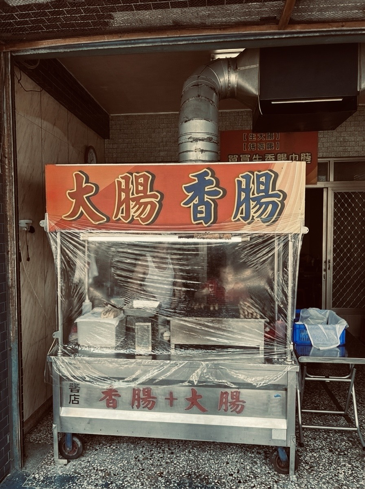
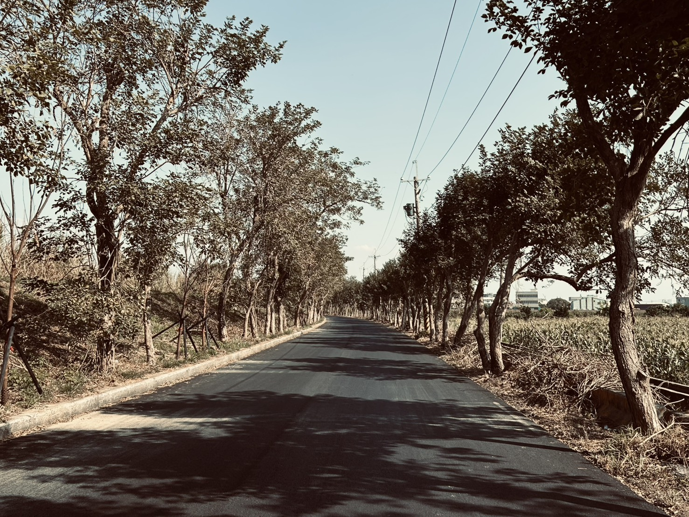
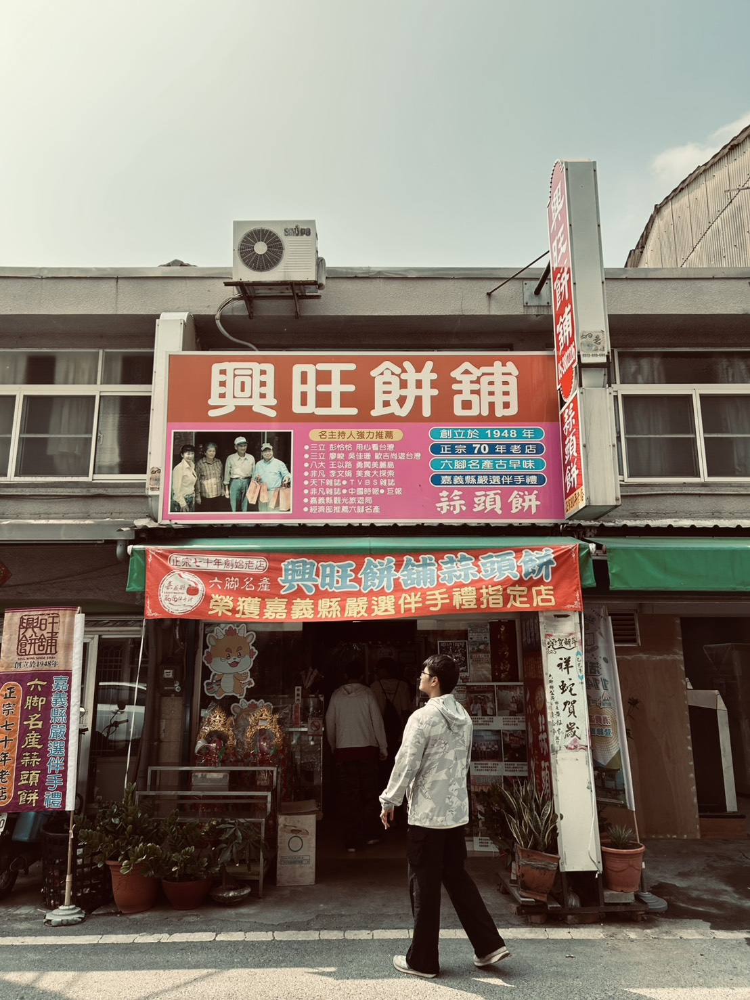
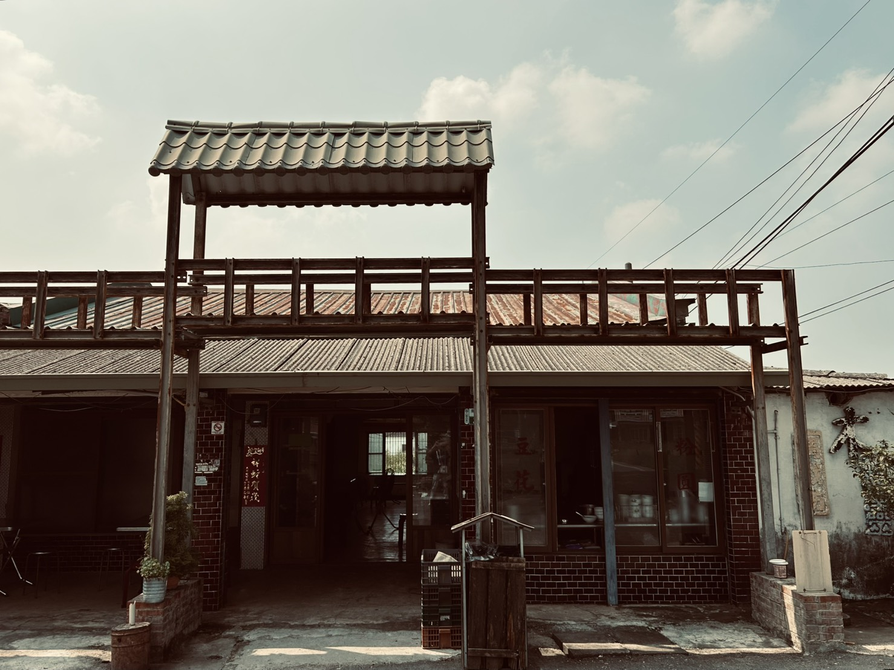
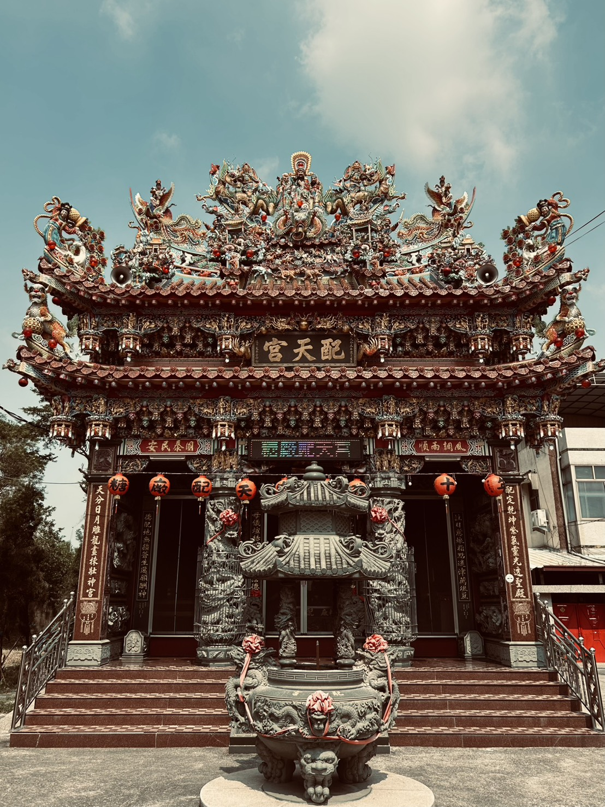
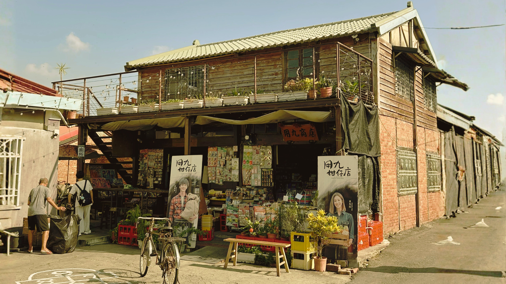
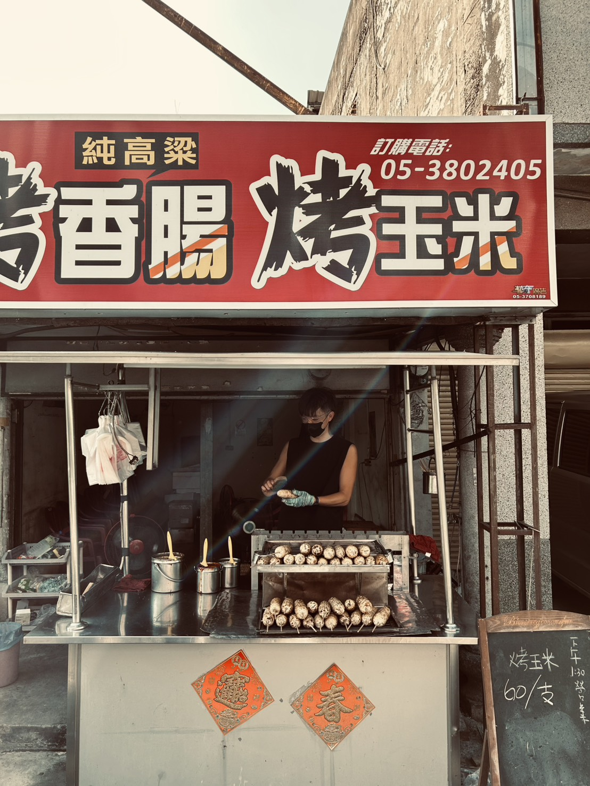

配天宮
糖廠媽祖的糖業守護
六腳簡介
六腳鄉位於嘉義縣西部，是典型的台灣嘉南平原農村。
這裡盛產蒜頭、花生、蘆筍，其中「蒜頭」更是全台聞名。
六腳私房推薦
探索在地人最愛的隱藏版景點與美食

炭火慢烤後外皮微焦、內餡多汁，咬下瞬間肉香四溢，令人回味無窮。這裡沒有華麗的裝潢，卻能成為居民日常與遊客記憶中難忘的味道...
探索更多
每年春季，朴子溪畔換上金黃色的風景，在藍天與流水的陪襯下，形成一條明亮而溫柔的賞花步道。漫步其中，不僅能欣賞季節限定的自然美景...
探索更多這裡結合了生活風景與地方情感的小型景點。橋身橫跨溪流，串連糖廠與木精靈豆花，成為遊客漫步與騎行的重要路線...
探索更多六腳攻略

興旺餅舖
品嚐傳統糕餅的美味，感受老師傅的手工溫度，外皮酥香內餡軟糯的蒜頭餅...
探索更多
木精靈豆花
享受清涼消暑的古早味豆花，真材實料的堅持，綿密細緻的豆香滋味...
探索更多
配天宮
糖廠內的信仰中心，見證台灣近代產業史，淡淡甘蔗甜香中的靜謐莊嚴...
探索更多蒜頭糖廠
品嘗古早味冰棒，搭乘五分車重溫糖業歷史，日式木造建築群的樹蔭下享受午後...
探索更多
用九柑仔店
百年老建築，懷舊復古的古早味雜貨店，琳瑯滿目的傳統零食喚醒兒時回憶...
探索更多
古早味烤玉米
經過炭火慢烤，香味四溢，讓人停下腳步，配上獨門醬汁的美味秘訣...
探索更多六腳當日天氣
讀取中...
--°C
降雨機率：--%
關於我們
由嘉義大學資訊管理學系六腳小組製作。
景點名稱
介紹...